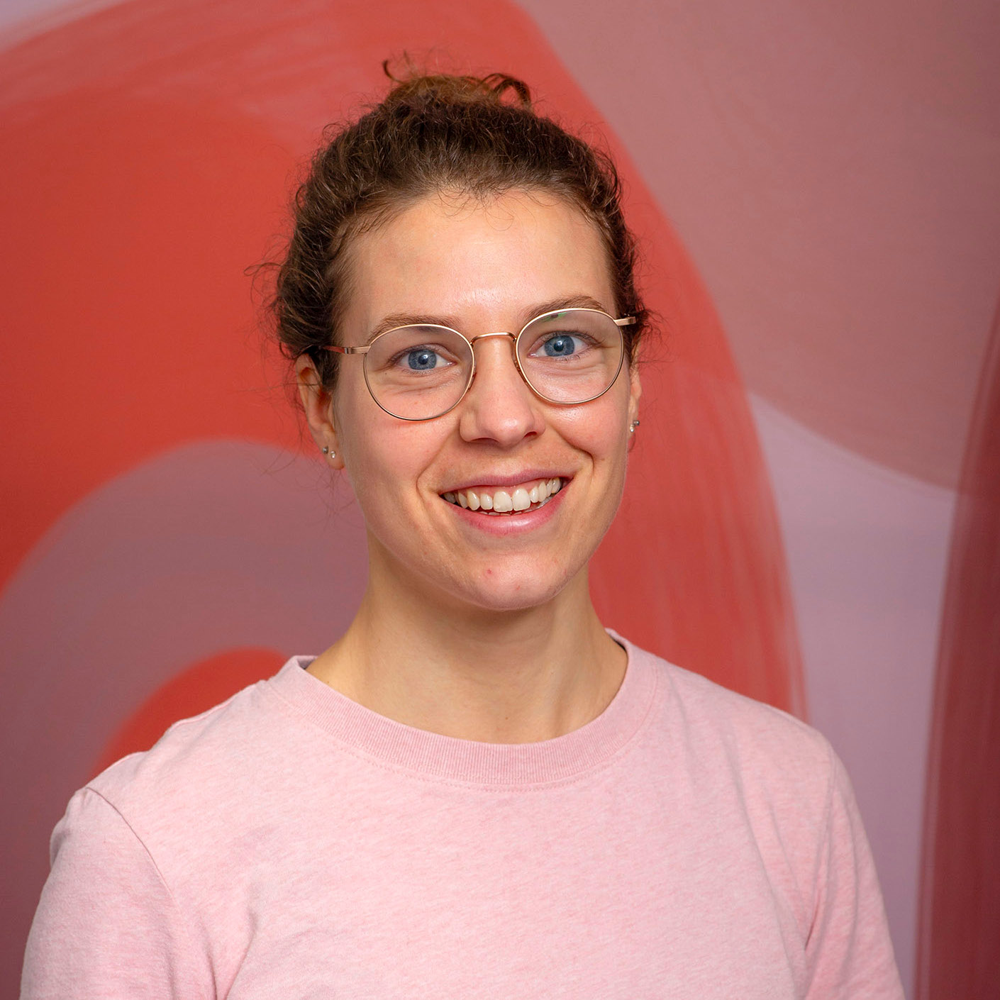
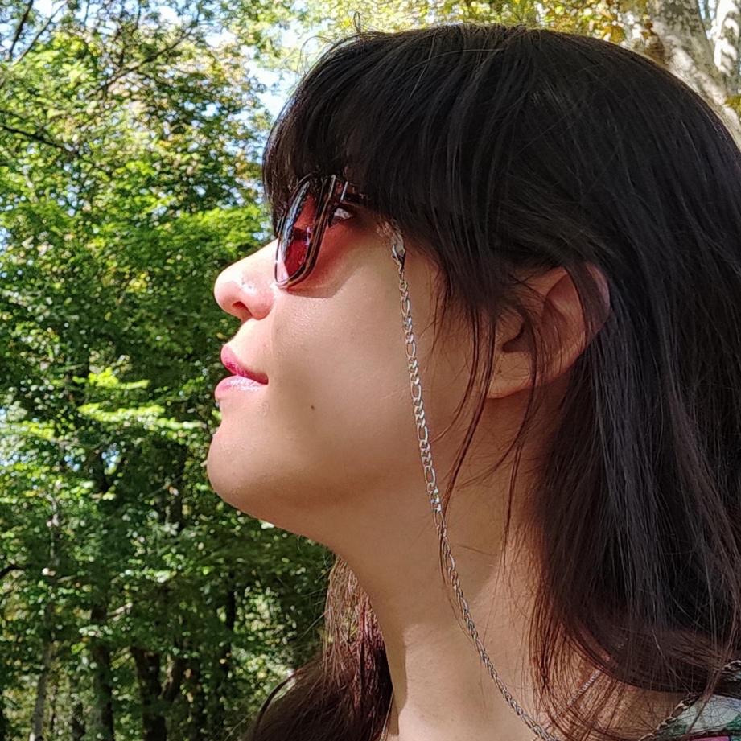
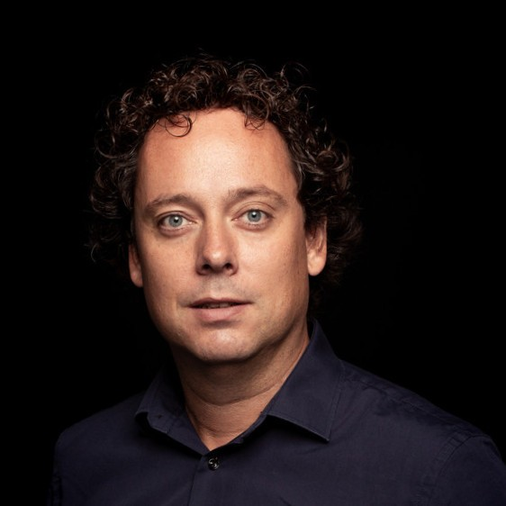

Joy of Coding
June 27, 2025 - De Doelen, Rotterdam
About us_

Anne van den Berg
Anne is a software engineer at the NTS where she is striving for
maintainable, high quality applications for transplantation professionals.
Besides being passionate about coding, she is also very into sports.

Arthur van Leeuwen
Arthur fell in love with computers and code as a kid and has been privileged enough to turn that
love into a career. Bounced around in academia as a programmer and assistant professor for a while, and
now works at Nedap Security, where he gets to code, architect and teach.

Elvira van der Ven
is a programming lecturer at the Rotterdam University of Applied Sciences and a student counselor for the Computer Science program.
As a lecturer she educates young people to use Java wisely, while, as a student counselor, she supports students who encounter difficulties during their educational journey.
Erik Hooijmeijer
is principal developer at 42 B.V. Loves coding for fun and profit, collector of 8 bit commodore computers, former organizer of Masters of Java.
Fell in love with Joy of Coding at the first edition, organized a workshop at the second. Had trouble attending subsequent editions and has
now chosen the smart way to attend, help organizing it!

Erik Pronk
Erik is a passionate software engineer that has been working in IT since 2001. During this period he
has gained a lot of experience in a variety of technologies, roles, development environments and market
segments.
His main focus is on implementing enterprise solutions in an agile way. In his spare time, Erik loves to
run and experiment with VR and domotics. Erik works at JDriven
where he shares his passion and drive with other colleagues.

Ivo Limmen
Ivo is a Principal Consultant at QSD B.V.
and a Software Engineer for all applications both online and offline.
He is never afraid to learn new things, autodidact and his best friend is DuckDuckGo.

Rob Brinkman
Rob Brinkman is Chief Technology Officer (CTO) of Conflux.
Rob can be described as a result driven, analytical and communicative strong professional whose interest and knowledge focus on
enterprise application development, mobile development, open-source solutions, software architecture and technical project management.
Alumni
We are very grateful to everyone who has contributed to our conference in the previous editions: Felienne Hermans, Peter Hilton, Barre Dijkstra, Reindert-Jan Ekker, Arne Timmerman, Martin van Amersfoorth, Cies Breijs, Rino Kadijk, Freek Leemhuis, Anna Gos, Jacques Bouman, Mark van Straten, Daan van Berkel, Jettro Coenradie, Marc Lainez, Linda van der Pal, Jenny Biekman, Paul van der Maden, Yosuf Haydary, Alex Kuiper, Eline Brader.
Previous Editions
2024 - Photos - Recorded Talks
2019 - Photos - Recorded Talks
2017 - Photos - Recorded Talks - After movie
2016 - Photos - Recorded Talks - After movie
2015 - Photos - Recorded talks - After movie
2014 - Photos - Recorded talks
2013 - Photos - Recorded talks
Legal
Joy of Coding is organised by Stichting Devnology, a Dutch non-profit organisation registered with the Kamer van Koophandel (#17251880). Our VAT number is NL820757573B01.
Our mailing address:
De Ban 2
7047 BB Braamt
The Netherlands